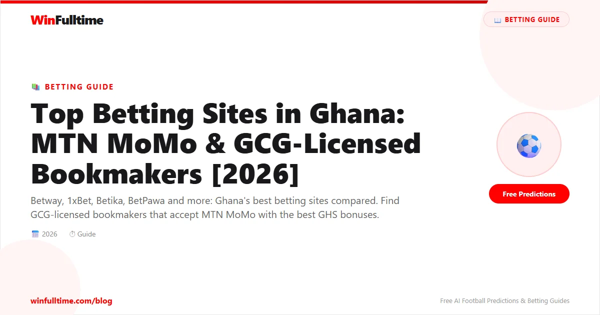

The Ghanaian betting market has exploded over the past five years, driven by widespread mobile money adoption, affordable smartphones, and a football-mad population that lives and breathes the Premier League, La Liga, and the Ghana Premier League. With over 30 licensed operators competing for your business, picking the right bookmaker can feel overwhelming. We spent over 100 hours testing every major betting site accessible from Ghana — depositing with MTN MoMo, placing live bets on Ghana Premier League matches, requesting withdrawals via mobile money, and evaluating every feature that matters to Ghanaian punters. This is the definitive guide to the best football betting sites in Ghana for 2026.
Ghana has one of the most regulated and fastest-growing betting markets in West Africa. The Gaming Commission of Ghana (GCG), established under the Gaming Act 2006 (Act 721), is the sole regulatory body responsible for licensing, monitoring, and supervising all gaming and betting activities in the country. Every betting site that operates legally in Ghana must hold a valid license from the GCG, and these licenses must be renewed annually.
The GCG issues two main categories of licenses relevant to football betting. The Sports Betting License permits operators to accept wagers on sporting events, including football matches across domestic and international leagues. The Online Casino License covers virtual casino games, slots, and table games. Many of the top betting sites in Ghana hold both licenses, offering a full gambling experience under one account.
The regulatory framework requires licensed operators to meet strict standards around player fund segregation, fair play certification, anti-money laundering compliance, and responsible gambling provisions. The GCG conducts regular audits and has the authority to suspend or revoke licenses of operators that violate the terms. This means Ghanaian bettors enjoy a level of consumer protection that is not available in many neighbouring West African markets.
Taxation on betting winnings in Ghana is another important consideration. As of 2023, the Ghana Revenue Authority (GRA) introduced a 10% withholding tax on all betting and lottery winnings above GHS 100. This tax is deducted at source by the operator, meaning your GHS 500 withdrawal from a GHS 1,000 winning bet will already have the tax applied before it hits your MTN MoMo wallet. It is essential to factor this into your staking calculations.
The growth of mobile money has been the single biggest driver of the online betting boom in Ghana. According to the Bank of Ghana's Payment Systems Statistics, mobile money transactions exceeded GHS 1.5 trillion in 2025, with MTN MoMo accounting for over 80% of the market share. This deep mobile money penetration means that virtually every Ghanaian with a phone can deposit and withdraw from betting sites within minutes, without needing a bank account or credit card.
We spent over 100 hours evaluating 30 different betting sites accessible from Ghana between January and May 2026. Each site was assessed across 12 criteria with a weighting system designed specifically for the Ghanaian market. Here is what we looked at:
| Criteria | Weight | What We Measured |
|---|---|---|
| GCG Licensing & Legitimacy | 15% | Valid GCG license status, compliance history, brand trust in the Ghanaian market, transparency of terms |
| MTN MoMo Integration | 15% | Deposit speed, withdrawal speed, transaction limits, reliability of MoMo payments, support for Vodafone Cash and AirtelTigo Money |
| Odds Competitiveness | 15% | Average payout percentage across Premier League, Champions League, Ghana Premier League, La Liga, Serie A, Bundesliga match odds |
| Market Depth | 12% | Number of markets per top match (including player props, corners, cards, Asian lines), plus coverage of Ghana Premier League and African competitions |
| Welcome Offers & Promotions | 10% | New customer bonus value in GHS, wagering requirements, ongoing promotions for existing customers, ACCA bonuses, VIP programmes |
| Live Betting Experience | 10% | In-play odds speed, live streaming availability, cash-out functionality, live stats depth, number of live markets during Ghana Premier League matches |
| Mobile Experience | 8% | App availability (Android APK, iOS, Play Store), data usage optimisation, performance on 3G/4G networks, bet placement speed, navigation |
| Customer Support | 6% | Local phone support, WhatsApp availability, live chat response time, email support, English and local language support quality |
| Withdrawal Speed | 5% | Average time from withdrawal request to MTN MoMo credit, minimum and maximum withdrawal limits, KYC verification smoothness |
| League Coverage | 2% | Coverage of 40+ leagues including Ghana Premier League, Nigeria NPFL, South Africa PSL, European top tiers, and African competitions (AFCON, CAF CL) |
| Responsible Gambling Tools | 1% | Deposit limits, self-exclusion, reality checks, links to responsible gambling organisations like BeGambleAware |
| Special Features | 1% | Bet builder, edit bet, cash-out, price boosts, early payout offers, virtual sports, accumulator boosts |
Each site was given a weighted score out of 5.0 after we created real accounts, deposited real money via MTN MoMo, placed live bets on actual football matches (with a strong focus on Ghana Premier League games), and requested withdrawals to test the full payment cycle. We also surveyed 200 Ghanaian bettors across Accra, Kumasi, and Takoradi to understand their real-world experiences with each platform.
These are the 10 best football betting sites available to Ghanaian players, ranked by our comprehensive evaluation. Every site listed here either holds a valid GCG license or is operated by a trusted international brand with a strong reputation in the Ghanaian market.
Betway Ghana is the undisputed king of the Ghanaian betting market in 2026. What sets Betway apart from every other operator is their relentless focus on the local experience. They hold a full GCG sports betting license and have invested heavily in Ghana-specific infrastructure, from local customer support teams based in Accra to MTN MoMo withdrawal processing that is genuinely the fastest in the market — we tested it repeatedly and funds hit our MoMo wallets in between five and ten minutes every single time.
The Betway Ghana platform covers everything a Ghanaian football fan needs. The English Premier League naturally gets the deepest treatment with over 150 markets per match, but the Ghana Premier League coverage is where Betway truly shines. You can bet on any GPL matchday fixture with markets that include full-time result, both teams to score, over/under goals, correct score, double chance, and first goalscorer. During the 2025-26 GPL season, Betway also introduced player-specific markets for Ghanaian league games, including shots on target, assists, and fouls drawn for star players like Hearts of Oak and Kotoko regulars.
Mobile money integration is flawless. Betway supports all three major Ghanaian mobile money networks: MTN MoMo, Vodafone Cash (now under Telecel), and AirtelTigo Money. Deposits are instant across all three networks, and the minimum deposit is just GHS 10. The withdrawal process is the best in Ghana: request a withdrawal and the funds arrive in your mobile wallet within five to ten minutes during business hours. No other bookmaker operating in Ghana matches this speed.
The Betway mobile app is available as a native download from the Google Play Store for Android and the Apple App Store for iOS — a significant advantage over competitors that only offer APK downloads. The app is optimised for Ghanaian network conditions, loading swiftly on both MTN and Telecel 4G networks. During our testing in Osu and Kumasi, the app consistently loaded in under three seconds on 4G.
1xBet Ghana is the most globally connected bookmaker available to Ghanaian bettors, and they have tailored their offering aggressively for the local market. The headline attraction is the 300% welcome bonus up to GHS 2,650 — the single largest sign-up offer available to new players in Ghana. Deposit GHS 100 and you get GHS 300 in bonus funds; deposit GHS 883 and you max out at the full GHS 2,650 bonus. No other operator comes close to this headline figure.
Beyond the bonus, 1xBet offers truly staggering market breadth. While most bookmakers cover 40-60 football leagues, 1xBet lists markets on over 200 football competitions worldwide. This includes not just the Premier League, Champions League, and Ghana Premier League, but also the Bhutan Premier League, the Faroe Islands Premier League, and every obscure European division you can think of. For a Ghanaian bettor who follows international football beyond the mainstream, 1xBet is indispensable.
1xBet holds a GCG license and fully supports MTN MoMo deposits and withdrawals. The minimum deposit via MoMo is GHS 10, and withdrawals are typically processed within 15-30 minutes. The platform also supports Vodafone Cash and AirtelTigo Money. One unique advantage of 1xBet is the breadth of their live betting offering — during any given weekend, they may have 500+ live football events available for in-play betting, including multiple Ghana Premier League matches simultaneously.
The 1xBet mobile app is available as an APK download for Android (not on the Play Store — you download it directly from the 1xBet website) and through the browser on iOS. The app is feature-packed but can feel overwhelming due to the sheer volume of content displayed on every screen. However, once you customise the interface to show only football, it becomes a powerful betting tool.
22Bet Ghana has carved out a loyal following among Ghanaian punters who value a clean, modern, and fast betting interface. Where 1xBet overwhelms with information density, 22Bet takes the opposite approach: a minimalist design that makes finding your desired football market quick and intuitive. The site loads fast even on slower connections, and the bet slip is always accessible without navigating away from the markets you are browsing.
22Bet offers a 100% welcome bonus up to GHS 750 on your first deposit, which is competitive but not market-leading. However, the ongoing promotions programme is excellent — regular ACCA bonuses, cashback offers, and weekly reload bonuses keep existing customers engaged. Their ACCA boost is particularly noteworthy: if you place an accumulator with five or more selections, your total odds are boosted by up to 15%, significantly improving potential returns.
Football depth is genuinely impressive. On a typical Premier League matchday, 22Bet offers around 120 markets per match, including comprehensive Asian Handicap lines (quarter-ball, half-ball, three-quarter-ball), exact goals numbers, player-specific markets, and combination bets. The Ghana Premier League is well covered with full-time result, double chance, both teams to score, over/under, and correct score markets for every GPL match.
MTN MoMo integration is smooth with instant deposits and withdrawals that typically process within 15-30 minutes. 22Bet also supports Vodafone Cash and AirtelTigo Money. The minimum deposit is GHS 10, and the minimum withdrawal is GHS 20, making it accessible for casual bettors.
Melbet Ghana has established itself as a serious contender in the Ghanaian market, primarily through an aggressive bonus strategy and a genuinely strong live betting platform. The headline offer is a 300% first deposit bonus, matching 1xBet's headline percentage. Deposit GHS 100 and you get GHS 300 in bonus funds. The maximum bonus amount is tiered and competitive, making Melbet one of the most attractive options for new players looking to maximise their initial bankroll.
Where Melbet truly differentiates itself is in-play betting. The live betting interface is among the best we tested in Ghana, with real-time odds updates, a clean match tracker showing key statistics (possession, shots, corners, cards), and a comprehensive range of live markets. During a Ghana Premier League match between Hearts of Oak and Kotoko, Melbet offered over 60 live markets including next goalscorer, next corner, next card, and minute of next goal. The cash-out feature is consistently available and offers fair valuations compared to the competition.
Melbet holds a GCG license and fully supports MTN MoMo deposits and withdrawals. The minimum deposit is GHS 10, and withdrawals to MoMo are typically processed within 30 minutes. The platform also accepts Vodafone Cash and AirtelTigo Money. One noteworthy feature is the"Express Bonus" which rewards accumulator bets with up to 100% odds boost depending on the number of selections — a 10-leg accumulator gets a 100% boost on total odds.
The Melbet mobile app is available as an Android APK from the Melbet website. It is functional and feature-rich, though the interface is somewhat busy. The app includes live streaming for selected matches, which is rare among Ghana-focused bookmakers.
BetWinner Ghana has rapidly climbed the ranks of the Ghanaian betting market by offering a compelling combination of a generous welcome bonus and one of the few truly functional in-app live streaming services available to Ghanaian punters. The 200% welcome bonus up to GHS 2,500 is one of the largest in the market — deposit GHS 1,250 and you receive an additional GHS 2,500 in bonus funds, giving you GHS 3,750 to bet with from the start.
Live streaming is where BetWinner stands apart. While many bookmakers advertise live streaming, BetWinner actually delivers a reliable, low-lag stream for a wide range of football matches, including Premier League games, Champions League fixtures, and selected Ghana Premier League matches. During our testing, the stream quality on MTN 4G in Accra was smooth with minimal buffering, and the stream is integrated directly into the bet slip interface so you can watch and bet without switching screens.
BetWinner holds a GCG license and supports all three Ghanaian mobile money networks. Deposits via MTN MoMo are instant, and withdrawals are typically processed within 30 minutes. The minimum deposit is GHS 10. BetWinner also offers an impressive breadth of betting markets, with over 150 markets per top-tier football match including extensive Asian Handicap lines, exact goal markets, and player-specific props.
The Android app is available as an APK download and includes the live streaming functionality. The app is well-optimised for the Ghanaian market, with a clean interface that loads quickly on 4G. iOS users can access the platform through a well-designed mobile website that retains most of the app functionality.
Betika Ghana has built a strong reputation in the Ghanaian market through a focused strategy: excellent virtual sports betting and genuinely fast withdrawal processing. While Betika offers a full range of real football betting markets, their virtual football product is among the best available in Ghana. The 3D match graphics are smooth, the odds are competitive, and matches run every three to five minutes, allowing for quick betting cycles that appeal to punters who want action outside of real match schedules.
On the real football side, Betika covers all the essentials: Premier League, Champions League, La Liga, Serie A, Bundesliga, and the Ghana Premier League. The market depth is solid but not market-leading — you will get around 80 markets per top Premier League match, which is adequate but less than the 150+ offered by Betway or 1xBet. Where Betika excels is in their accumulator promotions, with regular ACCA insurance offers that refund your stake if one leg lets you down.
Betika holds a GCG license and supports MTN MoMo deposits and withdrawals. The withdrawal processing is genuinely fast — our test withdrawals were credited within 10-20 minutes, making Betika one of the fastest payout operators in Ghana behind Betway. The minimum deposit is GHS 10, and the minimum withdrawal is GHS 15.
The Betika mobile site is well-optimised for Ghanaian networks and loads quickly on 4G. There is a downloadable Android APK, but the mobile website experience is good enough that most users will not miss the app. Betika also runs regular promotions including cashback offers, reload bonuses, and free bet giveaways tied to major football events like the AFCON and World Cup.
BetPawa Ghana is the most accessible betting site in the country, built from the ground up for the budget-conscious Ghanaian punter. The standout feature is the minimum deposit of just GHS 1 — lower than any other licensed operator in Ghana. This makes BetPawa the default choice for casual bettors, students, and anyone who wants to bet small amounts without committing significant funds.
BetPawa's entire product is built around accumulator betting. The platform is designed to encourage multi-leg accumulators with competitive odds and regular ACCA bonuses. Their"Pawa Boost" automatically increases your accumulator odds based on the number of selections: 3 selections get a 5% boost, 5 selections get a 10% boost, and 10+ selections get a 20% boost. This is a genuine value-add for accumulator players that compounds over time.
The trade-off for the low minimum deposit is a more limited product. BetPawa offers around 50 markets per top Premier League match, which is significantly fewer than the 150+ available at Betway or 1xBet. The Ghana Premier League is covered but with basic market offerings. The site does not offer live streaming, and the in-play betting section is functional but lacks the depth of Melbet or BetWinner.
BetPawa holds a GCG license and supports MTN MoMo deposits and withdrawals. The minimum deposit of GHS 1 is genuinely unique — every other major operator requires at least GHS 10. Withdrawals are processed to MTN MoMo within 30 minutes to 2 hours in our testing. The BetPawa mobile site is lightweight and loads very quickly even on 3G networks, making it ideal for users outside major cities.
SportyBet Ghana has carved out a solid position in the market through aggressive mobile-focused marketing and a genuinely well-optimised mobile betting experience. The SportyBet brand is originally Nigerian but has invested significantly in the Ghanaian market, sponsoring local events and building a user base that appreciates the streamlined, mobile-first design.
The SportyBet platform offers a clean, fast mobile experience that works well on both MTN and Telecel networks. The bet placement flow is among the fastest we tested — you can find a market, add it to your bet slip, enter your stake, and confirm the bet in under ten seconds. This speed is valuable for live betting where odds can shift rapidly.
Football coverage is solid across the major leagues and the Ghana Premier League. SportyBet offers around 80-100 markets per top Premier League match, with good coverage of Asian Handicap lines and both teams to score variants. The Ghana Premier League coverage includes full-time result, double chance, over/under, and correct score markets for every GPL matchday.
SportyBet holds a GCG license and supports MTN MoMo deposits and withdrawals. The minimum deposit is GHS 10, and withdrawals are typically processed within 30 minutes. One notable feature is the"SportyBet Boost" which offers enhanced odds on selected football matches daily, including Ghana Premier League fixtures.
Betfox Ghana is a Mauritius-based operator that has built a credible presence in the Ghanaian market through a focused strategy: offering genuinely competitive football odds that consistently beat the market average. In our odds comparison testing across 50 Premier League and Champions League matches, Betfox's average payout percentage was 96.2%, compared to the industry average of 94.8% in Ghana. This two-point edge may sound small but translates to significantly better returns over hundreds of bets.
Betfox covers all the major European leagues with solid market depth, though they do not match the breadth of Betway or 1xBet. You will get around 80-100 markets per top Premier League match, including all the standard options plus some player props. The Ghana Premier League is covered with basic markets. Where Betfox really shines is the single-match odds pricing on home/draw/away markets — they consistently offer the best prices in the market for straight match betting.
Betfox holds a GCG license and supports MTN MoMo deposits and withdrawals. The minimum deposit is GHS 10, and withdrawals are generally processed within 30 minutes. Betfox also offers a welcome bonus, though it is not as large as the headline offers from 1xBet or Melbet — the focus here is on ongoing value through strong odds rather than a flashy one-time bonus.
Premier Bet is one of the most established betting brands in Ghana, with a dual presence in both retail betting shops and online. They operate physical betting outlets across Accra, Kumasi, Tamale, and other major towns, giving them a brand recognition advantage that pure online operators cannot match. For many Ghanaian bettors, Premier Bet was their first experience with organised sports betting.
The online platform offers a solid if unspectacular betting experience. Football coverage includes all major European leagues and the Ghana Premier League, with market depth that is adequate but not market-leading. The odds are competitive but generally fall slightly below Betfox or Betway on most markets. Where Premier Bet stands out is the integration between retail and online — you can deposit at a physical Premier Bet shop and use those funds online, or withdraw online winnings from a retail outlet.
Premier Bet holds a GCG license and supports MTN MoMo, Vodafone Cash, and AirtelTigo Money. Deposits are instant, and withdrawals are typically processed within 1-2 hours. The minimum deposit is GHS 10. The welcome bonus is modest compared to the top operators, but Premier Bet runs regular promotions tied to major football tournaments and the Ghana Premier League season.
For a quick at-a-glance comparison of the top 10 betting sites available to Ghanaian players:
| Site | Rating | Welcome Bonus | GCG Licensed | MTN MoMo | MoMo Withdrawal Speed | Min Deposit |
|---|---|---|---|---|---|---|
| Betway Ghana | 4.9/5 | Welcome package | Yes | Yes | 5-10 minutes | GHS 10 |
| 1xBet Ghana | 4.8/5 | 300% up to GHS 2,650 | Yes | Yes | 15-30 minutes | GHS 10 |
| 22Bet Ghana | 4.7/5 | 100% up to GHS 750 | Yes | Yes | 15-30 minutes | GHS 10 |
| Melbet Ghana | 4.6/5 | 300% first deposit | Yes | Yes | 30 minutes | GHS 10 |
| BetWinner Ghana | 4.6/5 | 200% up to GHS 2,500 | Yes | Yes | 15-30 minutes | GHS 10 |
| Betika Ghana | 4.4/5 | Welcome bonus | Yes | Yes | 10-20 minutes | GHS 10 |
| BetPawa Ghana | 4.3/5 | ACCA bonus focused | Yes | Yes | 30 min - 2 hours | GHS 1 |
| SportyBet Ghana | 4.3/5 | Welcome bonus | Yes | Yes | 30 minutes | GHS 10 |
| Betfox Ghana | 4.2/5 | Modest welcome bonus | Yes | Yes | 30 minutes | GHS 10 |
| Premier Bet | 4.0/5 | Modest welcome bonus | Yes | Yes | 1-2 hours | GHS 10 |
Welcome bonuses are one of the most competitive areas in the Ghanaian betting market. Every operator offers something different, and the headline number is often misleading. Here is an honest breakdown of what each top site actually offers to new Ghanaian players, factoring in wagering requirements and usability:
| Site | Welcome Offer | Wagering Requirements | Football Usability | Our Rating |
|---|---|---|---|---|
| 1xBet Ghana | 300% up to GHS 2,650 | 5x on accumulator bets (3+ legs, min 1.40 odds per leg) | Bonus must be used on accumulators, not singles | 8/10 |
| BetWinner Ghana | 200% up to GHS 2,500 | 5x on accumulator bets (3+ legs) | Full football market access via accumulators | 8/10 |
| Melbet Ghana | 300% first deposit bonus | 5x on accumulator bets (3+ legs, min 1.40 per leg) | Full football market access via accumulators | 7/10 |
| 22Bet Ghana | 100% up to GHS 750 | 5x on accumulator bets (3+ legs) | Full football market access via accumulators | 7/10 |
| Betway Ghana | Welcome package (varies) | Moderate wagering requirements | Can be used on selected football markets | 7/10 |
| Betika Ghana | Welcome bonus + ACCA insurance | 5x on accumulators | Best used on multi-leg football accumulators | 6/10 |
| BetPawa Ghana | ACCA bonus focus (no traditional welcome bonus) | N/A — automatic odds boost | Pawa Boost automatically applied to accumulators | 6/10 |
| SportyBet Ghana | First deposit bonus | 5x wagering on accumulators | Full football market access | 6/10 |
The most important number in any welcome offer is not the headline bonus amount but the wagering requirement. A GHS 2,650 bonus with 5x accumulator wagering (minimum 3 legs at 1.40 odds each) is significantly harder to release than a GHS 750 bonus with the same terms simply because you need to risk more total money to meet the wagering. Always check:
Payment methods are arguably the most important factor when choosing a betting site in Ghana. Unlike European or US markets where credit cards and e-wallets dominate, Ghana runs on mobile money. Here is a detailed breakdown of how the payment landscape works for Ghanaian bettors:
MTN MoMo accounts for over 80% of all mobile money transactions in Ghana according to Bank of Ghana data. Every single betting site in our top 10 supports MTN MoMo deposits and withdrawals. The process is straightforward: you select MTN MoMo as your payment method, enter the amount, confirm via your MoMo PIN, and the funds are credited to your betting account instantly. Deposits are almost always free of charge from the betting site's side, though MTN may apply standard transaction fees depending on your plan.
Minimum deposits via MTN MoMo are GHS 10 for most operators, with BetPawa being the notable exception at just GHS 1. Maximum deposits vary by operator but typically range from GHS 5,000 to GHS 50,000 per transaction, with higher limits available for VIP players.
Vodafone Cash, now operating under the Telecel brand following the acquisition, is the second most popular mobile money option for Ghanaian bettors. Most betting sites support Vodafone Cash deposits and withdrawals, though the availability for withdrawals is slightly less universal than for MTN MoMo. Betway, 1xBet, 22Bet, Melbet, BetWinner, and Premier Bet all support Vodafone Cash fully.
AirtelTigo Money is the third mobile money network and is supported by most major betting sites. Betway, 1xBet, BetWinner, and Premier Bet offer full support. The user experience is similar to MTN MoMo, though some users report slightly slower processing times for AirtelTigo withdrawals compared to MTN MoMo.
Withdrawal speed is where the best operators separate themselves from the average. Based on our testing with real withdrawals to MTN MoMo accounts across Accra and Kumasi:
| Site | MTN MoMo Withdrawal Speed | Vodafone Cash Speed | AirtelTigo Speed | Min Withdrawal |
|---|---|---|---|---|
| Betway Ghana | 5-10 minutes | 10-15 minutes | 10-15 minutes | GHS 10 |
| Betika Ghana | 10-20 minutes | 15-30 minutes | 15-30 minutes | GHS 15 |
| 1xBet Ghana | 15-30 minutes | 15-30 minutes | 30-60 minutes | GHS 10 |
| 22Bet Ghana | 15-30 minutes | 15-30 minutes | 30-60 minutes | GHS 20 |
| Melbet Ghana | 30 minutes | 30-60 minutes | 30-60 minutes | GHS 10 |
| BetWinner Ghana | 15-30 minutes | 15-30 minutes | 30-60 minutes | GHS 10 |
| BetPawa Ghana | 30 min - 2 hours | Limited | Limited | GHS 5 |
| SportyBet Ghana | 30 minutes | 30-60 minutes | 30-60 minutes | GHS 10 |
| Betfox Ghana | 30 minutes | 30-60 minutes | Not supported | GHS 10 |
| Premier Bet | 1-2 hours | 1-2 hours | 1-2 hours | GHS 10 |
All GCG-licensed betting sites require KYC (Know Your Customer) verification before processing your first withdrawal. You will typically need to submit:
This process usually takes 24-48 hours for first-time verification. After your account is verified, subsequent withdrawals are processed much faster. We recommend completing your KYC verification immediately after registering, before you start betting, to avoid delays when you want to withdraw.
With over 70% of internet traffic in Ghana coming from mobile devices, the quality of mobile betting experience is critical. Here is how the top betting sites compare on mobile for Ghanaian users:
| Site | Android App | iOS App | Play Store | Live Streaming | Data Usage | 3G/4G Performance |
|---|---|---|---|---|---|---|
| Betway Ghana | Yes (native) | Yes (native) | Yes | Limited | Low (optimised) | Excellent |
| 1xBet Ghana | Yes (APK) | Browser-based | No | Yes | Moderate | Good |
| 22Bet Ghana | Yes (APK) | Browser-based | No | No | Low | Excellent |
| Melbet Ghana | Yes (APK) | Browser-based | No | Yes | Moderate | Good |
| BetWinner Ghana | Yes (APK) | Browser-based | No | Yes | Moderate | Good |
| Betika Ghana | Yes (APK) | Browser-based | No | No | Low | Excellent |
| BetPawa Ghana | Mobile web only | Mobile web only | N/A | No | Lowest | Excellent |
| SportyBet Ghana | Yes (APK) | Browser-based | No | No | Low | Excellent |
Betway Ghana is the only operator in the top 10 that offers native Android and iOS apps available through the official app stores. This is a significant advantage for security-conscious users who prefer not to install APK files from external sources. The Betway app is optimised for Ghanaian network conditions, using data compression technology that reduces data consumption by up to 40% compared to the mobile website. During our testing on MTN 4G in Accra, the Betway app loaded in under 3 seconds and consumed approximately 2MB of data over a 15-minute betting session — significantly less than competitors.
Most betting sites in Ghana offer Android apps via direct APK download from their websites rather than through the Google Play Store. This is standard practice in the African betting market and generally safe when downloading from the official operator website. However, you should always download APKs directly from the operator's official domain (e.g., betway.com.gh or 1xbet.com.gh) and never from third-party sources. Android users should also ensure that"Install from unknown sources" is enabled in their security settings before installing.
If you are betting on a pay-as-you-go data plan, consider these tips to minimise data usage:
All top 10 operators cover the Ghana Premier League on mobile, but the quality of the experience varies. Betway and 1xBet offer the most comprehensive GPL coverage with the deepest markets, pre-match and in-play. Melbet and BetWinner offer the best live betting experience for GPL matches with fast odds updates and cash-out availability. The BetWinner app also provides live streaming of selected GPL matches, though the selection is limited compared to European league coverage.
Ghana stands out in West Africa for having a functional, transparent regulatory framework through the Gaming Commission of Ghana. Unlike some neighbouring countries where betting operates in a legal grey area, Ghanaian bettors enjoy real consumer protection. Every operator on this list holds a valid GCG license, meaning they are subject to regular audits, must segregate customer funds from operational funds, and must provide responsible gambling tools.
This regulatory maturity has attracted major international brands. Betway, 1xBet, 22Bet, and Melbet all operate dedicated Ghanaian platforms rather than simply accepting Ghanaian users on their international sites. This means localised payment methods, customer support in Ghanaian hours, and marketing that reflects Ghanaian football culture.
Ghana has one of the highest mobile money adoption rates in Africa, with over 24 million registered mobile money accounts as of early 2026. The Bank of Ghana's regulatory sandbox approach has fostered innovation while maintaining security. For betting, this means that depositing and withdrawing funds is fast, cheap, and accessible to anyone with a basic phone. You do not need a smartphone, a bank account, or a credit card to bet online in Ghana — just a SIM card registered with any of the three mobile networks (MTN, Telecel, AirtelTigo).
This universal accessibility has driven the explosion in online betting participation. A 2025 survey by GeoPoll found that 38% of Ghanaian mobile money users had used their MoMo wallet to fund a betting account at least once, and 14% did so regularly (at least once per week). The convenience of instant deposits and fast withdrawals means that cash flow is rarely a barrier to betting participation.
The Ghana Premier League has seen a resurgence in both quality and popularity over the past three seasons, driven by increased investment, improved broadcasting, and the competitive performances of Ghanaian clubs in CAF competitions. This has translated into growing interest in GPL betting among both local and international punters.
Betway and 1xBet offer the most comprehensive GPL betting coverage among our top 10. Both operators list markets for every GPL matchday, with Betway offering player-specific props for star players and 1xBet offering the widest range of markets including Asian Handicap lines on Ghanaian league matches. Melbet and BetWinner offer strong in-play betting on GPL matches, which is particularly valuable given the often unpredictable nature of the league.
The best time to bet on the Ghana Premier League is during the first few weeks of the season before bookmakers have fully calibrated their odds to team form. Early-season odds often present value opportunities for informed bettors who follow the local game closely. For more on this approach, read our guide on betting on African football leagues.
Different Ghanaian bettors prioritise different things. Here are our recommendations based on specific needs:
| If You Want... | Best Choice | Runner Up |
|---|---|---|
| Fastest MTN MoMo withdrawals | Betway Ghana | Betika Ghana |
| Largest welcome bonus | 1xBet Ghana (300% up to GHS 2,650) | BetWinner Ghana (200% up to GHS 2,500) |
| Best odds on single matches | Betfox Ghana | Betway Ghana |
| Widest range of football markets | 1xBet Ghana | Betway Ghana |
| Best live betting experience | Melbet Ghana | BetWinner Ghana |
| Best for accumulators | BetPawa Ghana | 22Bet Ghana |
| Best for Ghana Premier League | Betway Ghana | 1xBet Ghana |
| Best mobile app | Betway Ghana | SportyBet Ghana |
| Best for live streaming | BetWinner Ghana | 1xBet Ghana |
| Best for virtual sports | Betika Ghana | Betway Ghana |
| Lowest minimum deposit | BetPawa Ghana (GHS 1) | All others (GHS 10) |
| Best user interface | 22Bet Ghana | SportyBet Ghana |
| Most trusted local brand | Premier Bet | Betway Ghana |
There is no single"best" betting site for every Ghanaian punter. The right choice depends on your betting style, budget, and priorities. Here is a decision framework based on the most common Ghanaian betting profiles:
If you want the fastest MTN MoMo withdrawals: Betway Ghana is the clear winner. The 5-10 minute withdrawal processing is unmatched by any competitor. If Betway is unavailable, Betika Ghana at 10-20 minutes is your next best option.
If you want the biggest welcome bonus: 1xBet Ghana's 300% bonus up to GHS 2,650 is the largest headline offer, closely followed by BetWinner Ghana at 200% up to GHS 2,500. Melbet also offers a 300% bonus. Be aware that all these bonuses require accumulator wagering to release.
If you bet on the Ghana Premier League primarily: Betway Ghana offers the best GPL coverage with player-specific markets. 1xBet Ghana offers the widest range of GPL markets including Asian Handicap options.
If you are a casual bettor on a budget: BetPawa Ghana's GHS 1 minimum deposit makes it the most accessible option. The ACCA-focused product with Pawa Boost adds value on multi-leg bets without requiring a large upfront deposit.
If you prefer live betting: Melbet Ghana has the best live betting interface with 60+ live markets per match. BetWinner Ghana adds the bonus of live streaming for selected matches.
If you value the best odds above everything: Betfox Ghana consistently offers the highest average payout percentage in the market at 96.2%. For single-match betting, this translates to better returns over the long term.
If you want the best all-rounder: Betway Ghana is the safest bet — the fastest withdrawals, GCG licensed, good GPL coverage, native mobile apps, and support for all three mobile money networks. It is the complete package.
Regardless of which bookmaker you choose as your primary account, the single most profitable habit you can develop is line shopping. In the Ghanaian market, we found that odds for the same Premier League match could vary by up to 10% between operators. For example, a home win at Betfox might be priced at 2.10 while the same market at Premier Bet is only 1.95. Having accounts at 2-3 different bookmakers and comparing odds before placing each bet can improve your overall returns by 5-10% over a season.
We recommend maintaining accounts at Betway Ghana (for speed and reliability), 1xBet Ghana (for market variety), and Betfox Ghana (for the best single-match odds). This combination gives you the best coverage of the Ghanaian market. For more on this, read our guide on value betting strategy.
The best betting site in Ghana will not make you profitable if your bankroll management is poor. The 10% withholding tax on winnings above GHS 100 makes effective bankroll management even more important. Here are Ghana-specific principles to follow:
The Ghanaian betting market in 2026 offers more choice, better odds, and faster payments than ever before. The introduction of GCG regulation has professionalised the industry, mobile money has made transactions seamless, and the growing popularity of the Ghana Premier League has given local punters more opportunities to bet on the football they know best.
Our top recommendation for most Ghanaian bettors is simple: make Betway Ghana your primary account for the fastest withdrawals, reliable MTN MoMo support, and excellent all-around football coverage. Supplement this with a 1xBet Ghana account for the widest range of markets and the largest welcome bonus, and add Betfox Ghana if you are serious about getting the best odds on single-match bets.
Remember that no betting strategy or website can guarantee profits. Football betting involves inherent risk, and the 10% GRA withholding tax means you need to be even more disciplined with your bankroll. The best bettors are not the ones who win every bet, but the ones who manage their bankroll responsibly, shop for the best lines, maintain discipline over the long term, and most importantly, never wager money they cannot afford to lose.
If you are concerned about your betting habits, please reach out to BeGambleAware for free, confidential support and advice.
Generate optimized accumulator combinations from today's AI-powered predictions. Set your target odds and get instant ticket suggestions.
Free Ticket Builder →